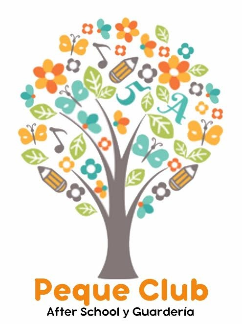

|

|
||
Cada menor tiene distintas necesidades tanto en horarios, sociales y pedagógicos es por esto que nuestro after está diseñado para que los niños se puedan entretener libremente contamos con una sala llamada multiuso en las cual realizamos distintos talleres y actividades recreativas. Sala de estudio es en la cual los niños realizan sus tareas, trabajos o se preparan para las pruebas semestrales contamos con una pizarra, material audiovisual en caso de necesitarlo y además útiles escolares los cuales son proporcionados por nuestro after.
Dirección : Rosales 1755 Malloco Peñaflor
Afterschoolpequeclub@gmail.com
Teléfono: 2 2812 9016 celular: +569 8922 0096
Facebook: afterpequeclub